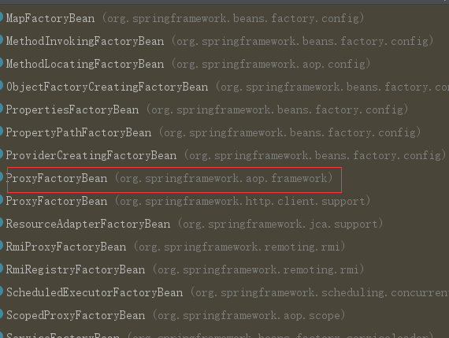

首先看一下接口定义
public interface FactoryBean<T> {
/**
* 返回对象实例
*/
@Nullable
T getObject() throws Exception;
/**
* 返回对象类型,
*/
@Nullable
Class<?> getObjectType();
/**
* 该工厂管理的对象是否为单例?
*/
default boolean isSingleton() {
return true;
}
}由接口定义可以看出来，实现这个接口的bean不是主要功能，getObject()创建的对象才是重点。那么在这我们就可以猜到了，可以是使用FactoryBean创建一些实例化过程比较复杂的bean
FactoryBean的注册FactoryBean的处理逻辑在AbstractBeanFactory.doGetBean方法内
protected <T> T doGetBean(
final String name, final Class<T> requiredType, final Object[] args, boolean typeCheckOnly)
throws BeansException {
//获取bean名称
final String beanName = transformedBeanName(name);
Object bean;
//省略部分内容
//这里就是FactoryBean的相关处理，下面会展开说
bean = getObjectForBeanInstance(sharedInstance, name, beanName, null);
//省略部分内容
return (T) bean;
}看一下具体的逻辑，这里需要注意Spring关于bean的name有个潜规则，凡是以&开头的bean名称都默认为FactoryBean
protected Object getObjectForBeanInstance(
Object beanInstance, String name, String beanName, @Nullable RootBeanDefinition mbd) {
// 如果beanName以工厂引用&开头
if (BeanFactoryUtils.isFactoryDereference(name)) {
if (beanInstance instanceof NullBean) {
return beanInstance;
}
// 如果name以&开头，而beanInstance不是FactoryBean类型，则抛异常
if (!(beanInstance instanceof FactoryBean)) {
throw new BeanIsNotAFactoryException(transformedBeanName(name), beanInstance.getClass());
}
}
// 如果beanInstance不是FactoryBean类型，则直接返回beanInstance
// 或者name以&开头，也直接返回beanInstance，说明我们就想获取FactoryBean实例
if (!(beanInstance instanceof FactoryBean) || BeanFactoryUtils.isFactoryDereference(name)) {
return beanInstance;
}
Object object = null;
if (mbd == null) {
object = getCachedObjectForFactoryBean(beanName);
}
if (object == null) {
// 此时beanInstance是FactoryBean类型，而name又不是以&开头; 这是我们示例工程的情况，也是最普通、用的最多的情况
// 将beanInstance强转成FactoryBean类型
FactoryBean<?> factory = (FactoryBean<?>) beanInstance;
// 从缓存中获取我们需要的实例对象
if (mbd == null && containsBeanDefinition(beanName)) {
mbd = getMergedLocalBeanDefinition(beanName);
}
boolean synthetic = (mbd != null && mbd.isSynthetic());
// 调用FactoryBean的getObject方法创建我们需要的实例对象
object = getObjectFromFactoryBean(factory, beanName, !synthetic);
}
return object;
}
protected Object getObjectFromFactoryBean(FactoryBean<?> factory, String beanName, boolean shouldPostProcess) {
//针对单例的处理
if (factory.isSingleton() && containsSingleton(beanName)) {
synchronized (getSingletonMutex()) {
Object object = this.factoryBeanObjectCache.get(beanName);
if (object == null) {
//通过factory.getObject获取
object = doGetObjectFromFactoryBean(factory, beanName);
Object alreadyThere = this.factoryBeanObjectCache.get(beanName);
if (alreadyThere != null) {
object = alreadyThere;
}
else {
if (shouldPostProcess) {
if (isSingletonCurrentlyInCreation(beanName)) {
// Temporarily return non-post-processed object, not storing it yet..
return object;
}
beforeSingletonCreation(beanName);
try {
object = postProcessObjectFromFactoryBean(object, beanName);
}
catch (Throwable ex) {
throw new BeanCreationException(beanName,
"Post-processing of FactoryBean's singleton object failed", ex);
}
finally {
afterSingletonCreation(beanName);
}
}
if (containsSingleton(beanName)) {
//将获取到的对象放到factoryBeanObjectCache单例缓存map进行存储
this.factoryBeanObjectCache.put(beanName, object);
}
}
}
return object;
}
}
else {
//非单例的处理，直接通过factory.getObejct获取，然后再返回给用户
Object object = doGetObjectFromFactoryBean(factory, beanName);
if (shouldPostProcess) {
try {
object = postProcessObjectFromFactoryBean(object, beanName);
}
catch (Throwable ex) {
throw new BeanCreationException(beanName, "Post-processing of FactoryBean's object failed", ex);
}
}
return object;
}
}生成bean对象的方法：
private Object doGetObjectFromFactoryBean(final FactoryBean<?> factory, final String beanName)
throws BeanCreationException {
Object object;
try {
if (System.getSecurityManager() != null) {
AccessControlContext acc = getAccessControlContext();
try {
object = AccessController.doPrivileged((PrivilegedExceptionAction<Object>) factory::getObject, acc);
}
catch (PrivilegedActionException pae) {
throw pae.getException();
}
}
else {
object = factory.getObject();//生成对象
}
}
catch (FactoryBeanNotInitializedException ex) {
throw new BeanCurrentlyInCreationException(beanName, ex.toString());
}
catch (Throwable ex) {
throw new BeanCreationException(beanName, "FactoryBean threw exception on object creation", ex);
}
// Do not accept a null value for a FactoryBean that's not fully
// initialized yet: Many FactoryBeans just return null then.
if (object == null) {
if (isSingletonCurrentlyInCreation(beanName)) {
throw new BeanCurrentlyInCreationException(
beanName, "FactoryBean which is currently in creation returned null from getObject");
}
object = new NullBean();
}
return object;}Spring中实现这个接口的bean有很多，但是我们最熟悉也是最重要的就是在我之前文章中提到过得ProxyFactoryBean这个bean是实现AOP技术的重点，简单回顾一下吧

public Object getObject() throws BeansException {
initializeAdvisorChain();
if (isSingleton()) {
return getSingletonInstance();
}
else {
if (this.targetName == null) {
logger.warn("Using non-singleton proxies with singleton targets is often undesirable. " +
"Enable prototype proxies by setting the 'targetName' property.");
}
return newPrototypeInstance();
}
}
private synchronized Object getSingletonInstance() {
if (this.singletonInstance == null) {
this.targetSource = freshTargetSource();
if (this.autodetectInterfaces && getProxiedInterfaces().length == 0 && !isProxyTargetClass()) {
// Rely on AOP infrastructure to tell us what interfaces to proxy.
Class<?> targetClass = getTargetClass();
if (targetClass == null) {
throw new FactoryBeanNotInitializedException("Cannot determine target class for proxy");
}
setInterfaces(ClassUtils.getAllInterfacesForClass(targetClass, this.proxyClassLoader));
}
// Initialize the shared singleton instance.
super.setFrozen(this.freezeProxy);
this.singletonInstance = getProxy(createAopProxy());
}
return this.singletonInstance;
}